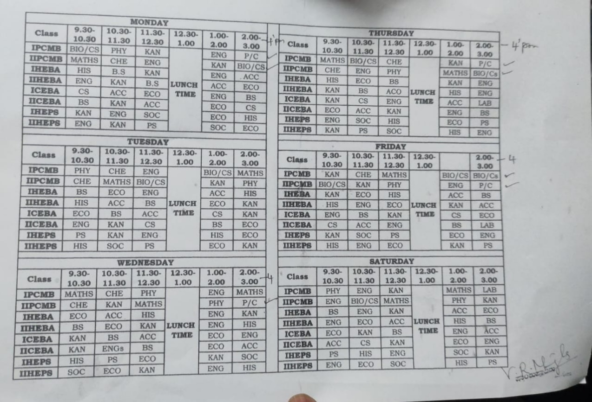
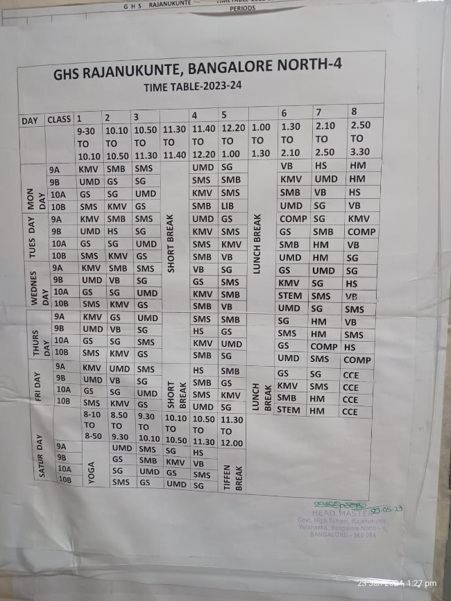
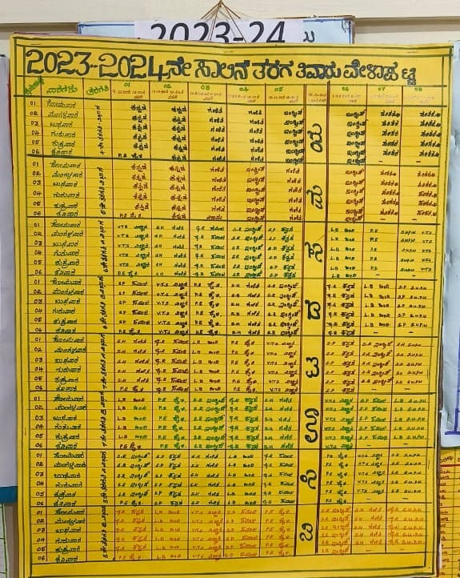

Introduction
Government Pre-University (PU) Colleges in Karnataka play a crucial role in guiding students from secondary to higher secondary education, emphasizing core subjects and preparing them for the PUC Board Exam. Government initiatives, including scholarships and infrastructure development, support students' academic journey. Vocational education enhances practical skills. For accurate details, it is recommended to refer to official sources.
Government schools in Karnataka form the educational foundation, covering primary to secondary levels. The curriculum aligns with the Karnataka State Board syllabus, culminating in the SSLC examination at the end of class 10. Government initiatives focus on scholarships, mid-day meals, and infrastructure development to enhance the quality of education. Vocational education is integrated, preparing students for practical skills and future employment. For specific information, individuals should consult official sources or contact the respective schools directly.
Government Pre-University (PU) Colleges in Karnataka: An Academic Overview
Government Pre-University (PU) colleges in Karnataka play a vital role in shaping the academic journey of students transitioning from secondary to higher secondary education. Following the state board curriculum, these institutions provide a comprehensive education that spans classes 11 and 12, known as the Pre-University Course (PUC). The medium of instruction in these colleges includes Kannada and English, catering to the linguistic diversity of the state. The academic focus encompasses a range of subjects, with a strong emphasis on core disciplines like mathematics, science, and social studies.
One of the significant milestones in the academic journey of students in PU colleges is the board examination at the end of the PUC. This examination, often known as the PUC Board Exam, holds great importance as it serves as a crucial determinant for further education and career pursuits. Students are evaluated based on their performance in subjects relevant to their chosen streams - Science, Commerce, or Arts.
Government initiatives in Karnataka play a key role in supporting education in PU colleges. Schemes such as scholarships aim to financially assist students, ensuring that economic constraints do not hinder their educational progress. Additionally, mid-day meal programs contribute to the overall well-being of students, fostering an environment conducive to learning. The government also invests in infrastructure development, creating conducive spaces for academic activities.
Vocational education is an integral part of the PU college curriculum, designed to enhance practical skills and employability. This initiative aligns with the broader goal of preparing students for both higher education and the professional world. It reflects a holistic approach to education, acknowledging the diverse aspirations and career paths that students may pursue.
To obtain the latest and specific details about the academic offerings, admission processes, and other relevant information in Government Pre-University Colleges in Karnataka, it is recommended to refer to official sources such as the Karnataka State Education Department or the respective college authorities.
Government Schools in Karnataka: An Academic Overview
Government schools in Karnataka form the foundation of a student's educational journey, providing primary and secondary education. The academic structure typically consists of primary classes (1-5), middle school (6-8), and high school (9-10). Kannada is the primary medium of instruction, but English is also widely used, especially in urban areas and private schools, contributing to linguistic diversity. The curriculum is based on the Karnataka State Board syllabus, covering languages, mathematics, science, social studies, and vocational subjects.
One significant aspect of government school education is the Secondary School Leaving Certificate (SSLC) examination at the end of class 10. This examination serves as a crucial evaluation point, determining a student's eligibility for further education. Government initiatives, such as scholarship programs, aim to alleviate financial constraints and promote access to education.
The state government actively invests in improving the quality of education in government schools. Initiatives include the provision of mid-day meals to ensure proper nutrition, infrastructure development to create conducive learning environments, and schemes to enhance the overall educational experience. Additionally, efforts are made to integrate vocational education into the curriculum, preparing students for practical skills and future employment opportunities.
For the most accurate and up-to-date information regarding admission procedures, academic offerings, and other specific details about government schools in Karnataka, individuals are advised to consult official sources such as the Karnataka State Education Department or contact the respective schools directly.
The Government PU College, Rajanakunte

The Government High School, Rajanakunte


The Government Primary School, Rajanakunte

SSP or State Scholarship Portal
The Government of Karnataka has introduced the State Scholarship Portal (SSP) to facilitate the efficient and seamless implementation and disbursement of scholarships from its various departments. This portal consists of two main segments: the SSP pre-matric scholarship and the SSP post-matric scholarship.
Pre-matriculation scholarships are available for students in Classes 1 to 10, while post-matriculation scholarships are designed for those who wish to pursue their education after completing Class 10. Both schemes focus on providing financial aid to students facing financial challenges. The SSP Scholarship 2024 will provide financial assistance to students from marginalized communities, specifically those belonging to the Other Backward Classes (OBC), Scheduled Castes (SC), and Scheduled Tribes (ST) categories. This scholarship aims to support these students in their pursuit of post-secondary education.
The objective of the SSP Scholarship is to strengthen the education of students of the state and ensure a high literacy rate. The SSP scholarship program includes assistance to the primary, secondary and vocational levels of education, generating more efficiency among the youth.
NSP or National Scholarship Portal
NSP Scholarship is an online scholarship portal of the Government of India. Also known as the National Scholarship Portal, the NSP website carries information on different scholarship programmes undertaken by central ministries and many state governments. The NSP platform also hosts application forms for all the scholarships and ensures their effective implementation and disbursement. Every year, the NSP portal hosts over 100 scholarship schemes for students coming from different education levels and socio-economic backgrounds.
The NSP portal has been introduced by the Union Government under the National e-Governance Plan (NeGP). The key objective behind introducing this portal was to ensure efficient and timely disbursement of scholarships to the end beneficiaries i.e. students without any leakages. To do so, the portal boasts of a SMART system that is Simplified, Mission-Oriented, Accountable, Responsive and Transparent.
Lions Club
In an endeavor to support the local community children in the field of education, Lions Club of Bangalore Shikshana was formed. LCB Shikshana was installed on 21- July 2013 and a team of professional 9 family members and 3 individuals joined hands to form this club. It was these teams of 21 charter members taken the key initiative to add value to under privileged children in the field of education.
Our motto is to impart good value system to these children, by spending our time in sharing our computer knowledge, language skills, giving special training to teachers. We aim to work closely with corporates with CSR focus and guide them to adopt schools or give donations. We also meet people who are service oriented and take their support to give books, notebooks and uniforms to these under privileged children. We appreciate any volunteers in supporting our community service.
The Government Primary School, Rajanakunte
Panchayat scholarships are often local initiatives by Gram Panchayats or Rural Local Bodies to support students within their jurisdiction. These scholarships may be based on various criteria, including academic performance, financial need, or specific community requirements. The aim is to promote education and contribute to the socio-economic development of the local population. Eligibility and application processes for Panchayat scholarships can vary, so it's advisable to check with the specific Gram Panchayat or local authorities for details.
Rajanukunte Gram Panchayat, part of Yelahanka Panchayat Samiti in Bengaluru Urban Zila Parishad, oversees six villages. Gram Panchayat Yelahanka, in turn, is divided into 27 wards with 26 elected members. Apart from managing schools, the Grama Panchayat can undertake measures promoting health, safety, education, and overall well-being. This includes revising taxes, ensuring universal enrollment in primary schools, and achieving universal child immunization.